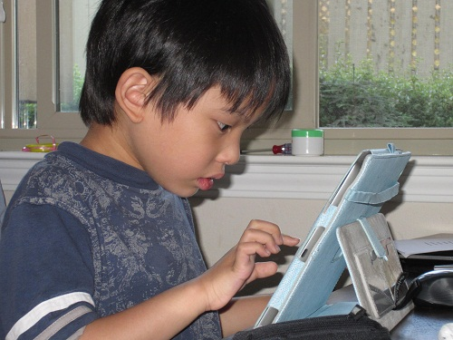

|
|
|
|
|
|
《勘誤需知》2013/7/20 周劍輝 2016/3/25
閱讀沒錯字的電子書是人生的一大樂事。好讀也提供了你方便的閱讀環境，看到錯字請別懊惱，提報一下，好讀就更完美了。
幾乎每天都會收到勘誤表。因每個人對錯別字的認知不一，每個勘誤表都需要肉眼逐項再判斷是否能改。都正確的改起來很輕鬆；看來有疑問的，要另花時間再查證的，改起來就很痛苦。敬請有意提供勘誤表的讀友，先細看以下的說明：
勘誤不是改作文。自己寫的書，愛用什麼字都可；別人寫的書，也請尊重一下原作者不要隨便改，除非是很明顯的輸入錯誤。
勘誤表不需完整，能列出幾個一看就讓人同意是該改的即可。幾年前放上的書，多少會有一些錯當時沒掃到，即使你未全列，我在更新時會都重新掃錯及檢查標點，也許就改掉了。所以常見的芝麻小錯不用列，或說不列也沒關係，因為十之八九你不列我也會掃到。要列的是程式不太容易判斷的錯，譬如說人名誤植，或按上下文才能判斷的。
勘誤準則：（可能也對也通的，請勿列在勘誤表上。）
- 請用站上最新版的書檔勘誤。
- 勘誤是改錯，明顯的錯當然改。
- 通用字、也正確的、無傷大雅的，能不改就不改，免得大家喜好不一，改來改去為難。有原書可核的，依原書的用字。
- 勘誤不是改寫，原作者、譯者文筆欠佳之處，見仁見智，除非很不通順，不改比較好。
- 有上下句不能連貫的地方，很可能是多字缺字，或缺段漏頁。這種情況只有一解：就是找原書來補。

勘誤表規格：
- 電子書是電子檔，修正要靠電腦幫忙。
- 電腦不需要知道章節、也不需要知道頁數。
- 電腦只需要知道哪幾個字要換成哪幾個字。
- 要跟電腦說：「這幾個字要換成這幾個字。」的格式很簡單，將「要換成」三個字用「/」代表即可：
這幾個字/這幾個字
- 範例：(一個錯一行)
匆勿忙忙/匆匆忙忙
寒喧/寒暄
作案現常/作案現場
淡淡他說：/淡淡地說：
- 電腦是全書搜尋。只要是這幾個字都會換成這幾個字。所以同樣的錯，只需要列一次。譬如說「寒喧」全書有好幾處，只需要列一次：寒喧/寒暄
- 若同樣的幾個字，並非全書都可改，請多列相鄰幾個字以便區分，否則電腦全改了。譬如說「他說」兩字全書到處都有，要將某處「他說」改成「地說」，不能只列：
他說/地說
一定要多列幾個字如：
淡淡他說：/淡淡地說：
-
為了避免電腦閉著眼睛全改了，電腦每找到一處，都要先請教人腦是否能改。請體貼一點，多列相鄰幾個字，減少無謂的判斷，人腦感謝你。
-
每本書的勘誤表，請集中成一個勘誤表上傳，方便一次作業。更新作業並非對電腦說請改就改好了。除了修正錯誤之外，還要轉檔，人工修改書的網頁、好讀下個月的首頁及更新預告，最後上傳至伺服器，每修正一回，就要重新作業一次。
為什麼會有錯字？
本世紀之前出版的實體書，尤其是鉛字排版的，幾乎都無電子檔。如今為何能在能在好讀或網路上覓得？這要感謝很多無名英雄花了很多的時間：按原書逐字輸入；或先用辨識軟體由原書掃描檔轉出文字，再按原書逐字核對更正。
但別驚喜的過早，在網路上覓得的電子檔，並非就等於是原書。因為不論輸入或辨識都會有錯，若未經多次和多人不斷校正，往往錯誤百出，難以卒讀。
實體書也會有錯別字，可是白紙黑字印上了，除非再版不能改。電子書雖然隨時可改，幾乎所有的網站放上了就不會再改，因而才會有好讀。
好讀版的電子書，少數是由讀友分工輸入，絕大多數是由讀友在網路上找來，邊看邊改錯製作成的《經典版》，或參照原書整理校對過，掉字缺頁均已補齊的【典藏版】。儘管品質已是網路上最好的，錯謬仍在所難免。閱讀時發現了錯別字或疑似處，請隨手記錄在紙上或文字檔，好在閱畢時提供勘誤表，造福後讀者。
大部份的輸入錯誤很容易猜解，如自已、含作、恐伯、奷細、伺侯、悄俏、兔談、驚大動地等，肉眼自動校正就跳過了。這些明顯的輸入錯誤要靠校正程式全篇搜尋修正。若同樣的錯有三處，肉眼也許只能看到一處。你能指出看到的那一處，我就可以讓我的校正程式更聰明一點，能夠找到其他兩處修正。
好讀版的電子書在放上之前，我都會用我的校正程式掃一遍。你指出的錯，若已加入我的錯別字檔，未來放上的書就不會有同樣的錯。當然校正程式再聰明也無法取代肉眼。有很多希奇古怪的錯誤，只能靠閱讀上下文，肉眼才能判斷。
不時會收到讀友寄來新製作的書，我無法逐一細讀判斷品質。其中不乏隨興製作，製作者自己都未仔細看過一遍的書，這樣的書用程式一掃，就是成篇明顯的輸入錯誤，不會上架。相對的，值得信賴的製作者，或掃不出幾個錯字的，當月就會上架。
校正程式只能把守第一關，上架的書仍然會有很多希奇古怪的錯誤。很難猜解的，若你的手邊正好有原書，或能借到原書，就最好不過了。請花一點時間核對原書，是真的輸入錯，抑或原書就錯。最有幫助的是：若你有原書，請提供掃描檔給好讀，方便日後其他讀友再勘誤時，可核對或按掃描檔重校。
若無原書可核，有時很難決定。怎麼辦？可以上網查國語辭典或漢典。你多花一點時間查證，我就可以省下一點再查證的時間，為大家多做一點別的服務，如加強校正程式或改寫好讀程式。感謝！
|
|
|
|
|
|
|
|
|
| 搜尋好讀 |
|
好讀第17年了。
有好讀真好，有你也真好。但不知遍及各地的你，究竟有多少。若你從未或很久沒贊助過好讀，請按這裡，贊助好讀美金或人民幣十元，讓我知道你存在。
11/25香港 Dennis C
幾年前由朋友介紹得悉好讀，多年來在旅途中它都帶給我很多樂趣。香港地方狹小，不少書都因地方問題而送人或丟棄，好讀卻帶給了我很多閲讀的方便、亦節省了儲存的位置。衷心多謝各位工作仝人！
11/19 美國紐約 June
發現好讀幾年了，但現在才發現這好讀留言板。抱歉呢，理應更早道謝。身在海外，要看一本中文書不是易事。書店售書種類少，價錢高；圖書館借書種類更少。幸好發現好讀網，可以一解書癮。衷心感謝所有有心人上載和校對。
11/17 大陸 Shirley
偶然發現好讀網這塊寶地真的很驚訝，網絡上有這樣安靜舒適的地方可以閱讀電子書，對我這種資金短缺的學生真的很意外很開心！
11/16 香港 chair chun wai
因為買了Kindle的緣故，所以才發現"好讀"這個地方。感謝"好讀"一直的更新和提供書本給大家。感謝感謝
11/15 香港 mike chan
我認識好讀是因爲kindle。那時中學買了kindle，需要找找電子書，因此在網上發現了好讀。對於繁體字kindle用家，這是個大福音！
11/13 大陸 BerthaR
今天因為Kindle的緣故找書，才發現好讀這個地方。感覺是一方淨土，公益地為書友們獲取知識省下了不少財力，節省了大家的時間：）目前我只是個高中生，提供的也只有十塊錢而已啦。十七年的好讀真是令人敬佩！希望你們知道我的感謝，還有知道更多人的感謝！
11/9 香港 MJ
從小喜愛看書，看書人也許都知道要管理保存書本是不容易的（尤其香港的地方空間更有限）。今年開始嘗試電子書，看看能否接受。因為好讀網的海量書本，小弟所喜愛的黃易＋衛斯理，還有準備開始看的金庸也不用愁了。感謝好讀！
>> 更多
|
|
|